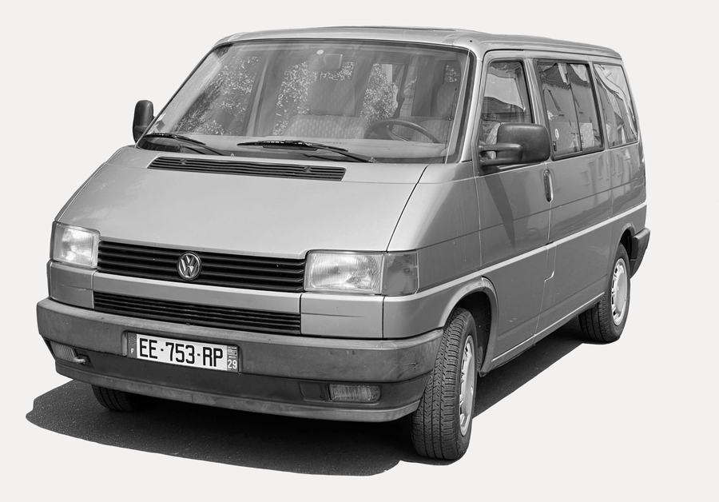

Kurzdaten
- Baujahr
- 1994gebaut 1990 bis 2003
- Motor
- 2,4 l Diesel5 Zylinder, Kennbuchstabe AAB
- Leistung
- 78 PS57 kW, 164 Nm
- Höchstgeschwindigkeit
- 137 km/h0–100 km/h in 24,7 s
- Verbrauch
- 9,3 l/100 kmTank 80 l
- Getriebe
- 5-GangFrontantrieb
- Sitzplätze
- 6 bis 7Rückbank als Bett
- Länge
- 4,71 m1,84 m breit, 1,92 m hoch
- Leergewicht
- 1780 kgzulässig 2590 kg
- Anhängelast
- 2000 kggebremst
- Farbe
- Silbergrau MetallicLackcode D7V
- Neupreis
- ca. 45.400 DM23.205 €, ohne Extras
